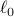
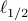
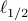
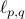

胡耀华 - 软件
Matlab
LpRGNI (Lp Regularization for Gene Network Inference)
- LpRGNI是运用Lasso类方法（包括, 和正则化方法），结合高通量基因表达数据和转录因组学数据来预测基因调控网络的Matlab工具包。
和正则化方法），结合高通量基因表达数据和转录因组学数据来预测基因调控网络的Matlab工具包。
- 参考文献:J. Qin, Y. Hu, F. Xu, H. K. Yalamanchili and J. Wang, Inferring gene regulatory networks by integrating ChIP-seq/chip and transcriptome data via LASSO-type regularization methods, Methods, 67: 294-303, 2014. [link]
R
GSparO (Group Sparse Optimization)
- GSparO是运用proximal gradient algorithm求解组稀疏优化的正则化模型的R工具包。
- 参考文献:Y. Hu, C. Li, K. Meng, J. Qin and X. Yang, Group sparse optimization via regularization, Journal of Machine Learning Research, 18(30): 1-52, 2017. [link]
Webserver
CrusTF (Crustacean Transcription Factors)
- CrusTF是研究甲壳类动物进化和功能的转录因子的网络服务器。
- 参考文献:J. Qin, Y. Hu, K. Ma, X. Jiang, C. Ho, L. Tsang, L. Yi and K. Chu, CrusTF: A comprehensive resource for evolutionary and functional studies of crustacean transcription factors, BMC Genomics, 18(1): 908, 2017. [link]